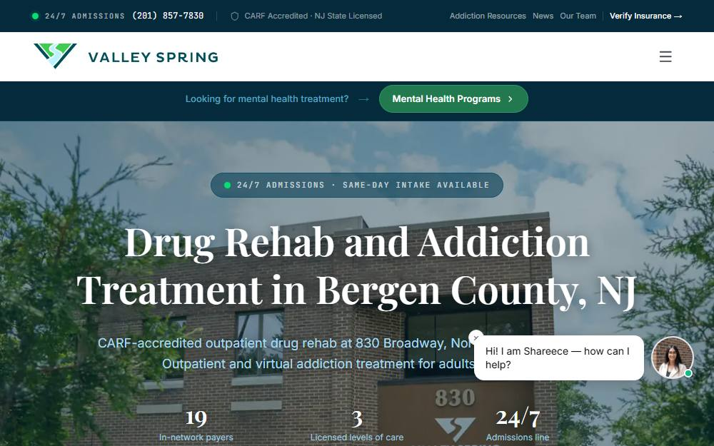

Editor’s pick · ranked 01 of 6
Valley Spring Recovery Center
Norwood, NJ · Bergen County
The Valley Spring Recovery Center holds dual New Jersey licenses for substance use and mental health treatment, publishes its program schedules, and runs an evening intensive outpatient track built around people who are still working.
Norwood sits in Bergen County, in northern New Jersey.

At a glance
- Levels of care
- Partial care, IOP, evening IOP, outpatient, telehealth*
- Licensing
- NJ SUD #200887 and NJ mental health #70420104*
- Accreditation
- CARF; The Joint Commission*
- Notable
- First responder program; case management and return-to-work support; alumni network*
Why we favor itOur preferred overall option for structured care with a real mental health license. Both license numbers are published, which is rare in this market and easy to verify. A specialized program for first responders, health and wellness programming, and a robust alumni network that brings in motivational speakers—pro wrestler Zack Clayton and Kendrick Perkins, the former NBA champion, have both appeared. Substantial return-to-work and case management credentials alongside licensed clinical and medical staff. Confirm current openings and which payers are in network for your specific plan.
*Provider-reported information, current as of August 2026; confirm before admission. Inclusion does not imply endorsement. Details can change.
How it scores
Four dimensions, weighted equally. These measure the clarity and breadth of publicly available information—not treatment outcomes or patient satisfaction. How we review →
Clinical clarity
5.0Program schedules are published with actual times rather than described in the abstract, and the levels of care are distinguished from one another rather than blurred into one offering.
Medical support
4.5Medical director and psychiatric prescribing are named as part of the program. There is no on-site detox, so withdrawal management is arranged elsewhere — ask how that handoff is handled.
Program depth
5.0Partial care through outpatient, plus specialty tracks for first responders and working professionals, family programming, case management and health and wellness.
Continuing care
4.8An active alumni program with regular events, plus case management and return-to-work support extending past discharge.
Who it fits
- Someone whose primary problem is mental health rather than substance use, since the standalone mental health license means no substance use diagnosis is required
- People who cannot stop working and need an evening intensive outpatient schedule
- First responders looking for a program built for them
- Anyone who wants to verify credentials before calling — both license numbers are published
Who it does not
- Anyone likely to need medically supervised withdrawal, which is not provided on site
- People needing residential or inpatient care
- Adolescents — this is an adult program
Paying for it
- Commercial insurance
- In network with 19 commercial payers, published on site
- Medicaid / Medicare
- Not published as a Medicaid or Medicare provider
- Self-pay
- Rate not published
Verifies benefits before intake and publishes an insurance verification path. Because it holds a standalone mental health license, a mental-health-primary admission is billed against mental health benefits rather than substance use benefits — which matters if substance use benefits are exhausted or excluded.
What to ask them
Specific questions for this center, based on what its own materials leave open.
- Which of the two licenses would my admission fall under, and does that change the schedule?
- What are the exact start and end times of the evening IOP, and what happens if I miss a session for work?
- If detox turns out to be necessary, who provides it and who holds clinical responsibility during it?
- Is my specific plan in network, and what is the expected out-of-pocket figure in writing?